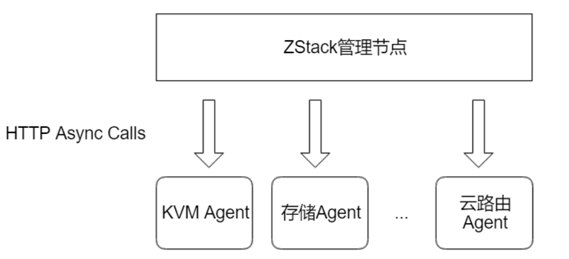
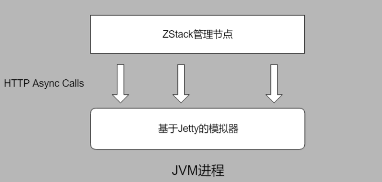

把简单的事情做得出人意料的精彩
概述
zstack是什么？
zstack是一个IaaS软件，可以通过API灵活的管理存储，网络，路由，计算，KVM等资源。
什么是自动化测试？
我们可以简单的理解为前期通过人工编码完成框架，后期来解放人力并自动完成规定的测试。在测试人员测试之前，开发人员已经完成很大部分的功能测试，测试人员只需要调用后者运行代码就可以看到测试结果。具体实现是：在自动化测试框架下，开发人员对自己负责的模块要达到基本覆盖测试代码。
zstack的Integration Test框架
作为产品型的IaaS项目，ZStack非常重视测试，我们要求每个功能、用户场景都有对应的测试用例覆盖。ZStack的测试有多种维度，本文介绍后端Java开发人员使用的基于模拟器的Integration Test框架。
ZStack的运行过程中，实际上是管理节点进程(Java编写)通过HTTP PRC调用控制部署在数据中心各物理设备上的Agent（Python或Golang编写），如下图：

在Integreation Test中，我们用模拟器（通过内嵌的Jetty Server）实现所有Agent HTTP RPC接口，每个用例的JVM进程就是一个自包含的ZStack环境，如图：

实例：
1 | class OneVmBasicLifeCycleCase extends SubCase { |
ZStack的Integreation Test使用groovy编写，通过JUnit运行。运行如下命令可以执行该case：
cd /root/zstack/test
mvn test -Dtest=OneVmBasicLifeCycleCase
构成
从代码中可以看到所有Integration Test都继承SubCase类，例如：
1 | class OneVmBasicLifeCycleCase extends SubCase { |
并实现4个抽象函数：
1.setup：配置用例，主要用于加载运行用例需要用到的ZStack服务和组件
2.environment： 构造测试环境，例如创建zone、cluster，添加host等操作
3.test：执行具体测试代码
4.clean：清理环境 （仅当该case在test suite中运行时执行，后文详述
测试用例运行时，上述4个函数依次执行，任何一个环节出现错误则测试终止退出（case在test suite中运行时例外）。
一般在setup中，会将依赖的Bean按需加载进来。这在前面提到过；而environment则会构建出一个环境。Grovvy对DSL支持较好，所以整个环境的构建代码可读性极强，本质上每个DSL都对应了一个Spec，而Sepc对应了一个ZStack的SDK创建调用——即XXXAction。而XXXAction则通过HTTP调用ZStack的API接口。
在平时测试中大家可能直接Build一个环境对数据库进行操作，但是这在ZStack中并不是很好的方案。一个Iaas中的资源依赖及状态变动的关系是错综复杂的，因此调用外部的API来创建资源是一个明智的选择。同时也可以测试SDK和API的行为是否是期待的。
模拟agent行为-灵活测试
ZStack Integreation Test最核心功能是通过基于Jetty的模拟器模拟真实环境下物理设备上安装的agent，例如模拟物理机上安装的KVM agent。当测试的场景涉及到后端agent调用时，我们需要捕获这些HTTP请求并进行验证，也可以伪造agent返回测试API逻辑。
如果看过ZStack的Case，可以看到很多类似的方法：
- env.afterSimulator
- env.simulator
- env.message
这几个方法用来hook Message和HTTP Request。由于在ZStack中各个组件的通信都由Message来完成，对于Agent的请求则是统一通过HTTP来完成。这样在TestCase就可以任意模拟任何组件及agent的状态，让Case有极强的实用性——也保证了ManagentMent Node的逻辑健壮。
具体的使用方式可以参考官网zstack测试部分的讲解
与Java Web应用中MockMVC对比
ZStack的SDK本质上是包装了一层HTTP Path，利用通用的协议便于开发者进行开发或测试。而在传统的Java WEB应用中，一般会通过MockMvc进行测试。其本质也是通过调用每个API的Path传参来进行测试。如下VMAgent测试代码：
1 | (SpringJUnit4ClassRunner.class) |
从代码中可以看到MockMvc，发送请求到指定路径。
1 | MvcResult result = mvc.perform(MockMvcRequestBuilders.post("/mysql/start") |
后端接收到消息，可以hook其中的Msg，返回假的值。
为什么使用自动化测试
自动化测试好处很明显：
保证软件质量，重复的活交给机器来做，避免繁琐重复的手动测试，节省人力；
为重构打下良好的基础：软件内部无论如何重构，对外部请求所返回的结果不应该有所变化；
保证核心类库的逻辑不遭受破坏，同时也可以作为使用的“样本”，由于没有业务逻辑的耦合，代码显得更加清楚，便于阅读；
…..